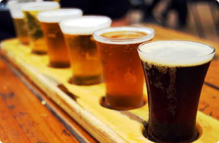

Tijdens de kroegentocht ga je met vrienden en andere vakantiegangers in verschillende steden in je vakantieland op pad om bij allerlei verschillende kroegen lekker wat te gaan drinken, en om er nieuwe mensen te ontmoeten. De gezelligste cafés worden voor je geselecteerd en krijgen een plek in de kroegentocht.

Het boeken van een kroegentocht kan zeer eenvoudig door deze optie te selecteren bij het boeken van een vakantie. Verder geven we tips voor allerlei leuke workshops en diners die je goed kunt combineren met de kroegentocht. Veel plezier!